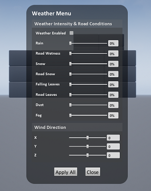

欢迎来到 AirSim
AirSim是一个基于虚幻引擎（我们还有一个支持Unity的试验性版本）以模拟汽车、无人机的模拟器。AirSim仿真模拟平台是开源、跨平台、支持诸如PX4等常见的硬件在环（hardware-in-loop）飞行遥控器。AirSim是一个虚幻引擎插件，所以它可被移植到任意的虚幻环境中。同样，我们有一个试验性的Unity版本插件。
我们的目标是将AirSim发展成一个可以实验自动驾驶汽车的深度学习，计算机视觉和强化学习算法的人工智能研究平台。 为此，AirSim还公开了API，用以以独立于平台的方式检索数据和控制车辆。
查看一分三十秒的快速演示
AirSim中运行无人机

AirSim中运行汽车

最近更新
- 添加了天气环境和相关的 APIs
- Added Time of Day API
- An experimental integration of AirSim on Unity is now available. Learn more in Unity blog post.
- New environments: Forest, Plains (windmill farm), TalkingHeads (human head simulation), TrapCam (animal detection via camera)
- Highly efficient NoDisplay view mode to turn off main screen rendering so you can capture images at high rate
- Lidar Sensor
- Case Study: Formula Student Technion Driverless
- Multi-Vehicle Capability
- ROS publisher
For complete list of changes, view our Changelog
How to Get It
Windows
Linux

How to Use It
Documentation
View our detailed documentation on all aspects of AirSim.
Manual drive
If you have remote control (RC) as shown below, you can manually control the drone in the simulator. For cars, you can use arrow keys to drive manually.


Programmatic control
AirSim exposes APIs so you can interact with the vehicle in the simulation programmatically. You can use these APIs to retrieve images, get state, control the vehicle and so on. The APIs are exposed through the RPC, and are accessible via a variety of languages, including C++, Python, C# and Java.
These APIs are also available as part of a separate, independent cross-platform library, so you can deploy them on a companion computer on your vehicle. This way you can write and test your code in the simulator, and later execute it on the real vehicles. Transfer learning and related research is one of our focus areas.
Note that you can use SimMode setting to specify the default vehicle or the new ComputerVision mode so you don't get prompted each time you start AirSim.
Gathering training data
There are two ways you can generate training data from AirSim for deep learning. The easiest way is to simply press the record button in the lower right corner. This will start writing pose and images for each frame. The data logging code is pretty simple and you can modify it to your heart's content.

A better way to generate training data exactly the way you want is by accessing the APIs. This allows you to be in full control of how, what, where and when you want to log data.
Computer Vision mode
Yet another way to use AirSim is the so-called "Computer Vision" mode. In this mode, you don't have vehicles or physics. You can use the keyboard to move around the scene, or use APIs to position available cameras in any arbitrary pose, and collect images such as depth, disparity, surface normals or object segmentation.
Weather Effects
Press F10 to see various options available for weather effects. You can also control the weather using APIs. Press F1 to see other options available.

Tutorials
- Video - Setting up AirSim with Pixhawk Tutorial by Chris Lovett
- Video - Using AirSim with Pixhawk Tutorial by Chris Lovett
- Video - Using off-the-self environments with AirSim by Jim Piavis
- Reinforcement Learning with AirSim by Ashish Kapoor
- The Autonomous Driving Cookbook by Microsoft Deep Learning and Robotics Garage Chapter
- Using TensorFlow for simple collision avoidance by Simon Levy and WLU team
Participate
Paper
More technical details are available in AirSim paper (FSR 2017 Conference). Please cite this as:
@inproceedings{airsim2017fsr,
author = {Shital Shah and Debadeepta Dey and Chris Lovett and Ashish Kapoor},
title = {AirSim: High-Fidelity Visual and Physical Simulation for Autonomous Vehicles},
year = {2017},
booktitle = {Field and Service Robotics},
eprint = {arXiv:1705.05065},
url = {https://arxiv.org/abs/1705.05065}
}
Contribute
Please take a look at open issues if you are looking for areas to contribute to.
Who is Using AirSim?
We are maintaining a list of a few projects, people and groups that we are aware of. If you would like to be featured in this list please make a request here.
Contact
Join the AirSim group on Facebook to stay up to date or ask any questions.
FAQ
If you run into problems, check the FAQ and feel free to post issues in the AirSim repository.
License
This project is released under the MIT License. Please review the License file for more details.